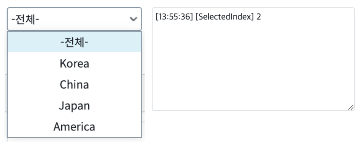
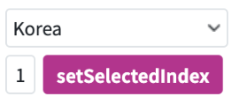

SelectBox의 getSelectedIndex와 setSelectedIndex의 예제입니다. selectedIndex는 현재 선택되어 있는 값은 index를 뜻하며 이름 그대로 현재 index 값을 받거나(get) 설정하는(set) 예제입니다. getSelectedIndex: 현재 설정되어 있는 값의 index를 받는다. setSelectedIndex: SelectBox의 선택된 값을 입력한 Index로 바꾼다.
getSelectedIndex로 현재 선택된 index 값 받아오기
setSelectedIndex로 선택된 항목 변경하기
SelectBox의 선택된 값을 변경하면 로그 영역에 선택된 index가 출력됩니다.
그림 1.[브라우저 실행 예제]

inputbox에 변경할 index(0~4)를 입력하고 setSelectedIndex 버튼을 클릭하고 변경된 SelectBox의 상태를 확인합니다.
그림 2.[브라우저 실행 예제]

[함수] getSelectedIndex : SelectBox가 현재 선택되어 있는 index를 반환합니다.
[소스 코드 예시]
// 사용 예시 var _idx = ipt_index.getValue();
[함수] setSelectedIndex(index) : SelectBox가 입력된 index를 선택합니다.
[소스 코드 예시]
// 사용 예시 (index 2로 변경) sbx_select11.setSelectedIndex(2);
getSelectedIndex
setSelectedIndex(index)